Провайдер замедляет YouTube, глушит Discord и закрывает ChatGPT. NetFix сам скачает и запустит Zapret и tg-ws-proxy прямо на компьютере: без батников, консоли и VPN. Нажал одну кнопку, и всё работает как раньше.
500+
звёзд на GitHub
50 000+
скачиваний
Проверено
VirusTotal, каждый релиз
Попробуй сам
Видео не грузится?
Так выглядит YouTube у многих провайдеров. Опустись чуть ниже, там живой NetFix.
Воспроизведение 4K60FPS
/ 0:17
HD
Нажми на кнопку
Круглая кнопка «Починить» находится в окне NetFix ниже. А результат появится в плеере выше.
NETFIXby rupleide
СетьVPNZapretTgWsProxy
СервисыМодыFAQДиагностикаИгра
Починить Telegram и Discord
Одна кнопка - скачает, настроит и запустит всё необходимое.
Входящий- Мбит/с
Исходящий- Мбит/с
Пинг- мс
Байпас отключен
ЛогСкопироватьОчистить
Для кого
Для тех, кто ценит удобство
По старинке
Батники, консоль и догадки
Можно и дальше открывать bat-файлы и разбираться, что в них и где. Стратегии перебираешь вручную, а когда что-то ломается, непонятно почему.
Архив и пачка bat-файлов
Стратегии вручную
Непонятно, что сломалось
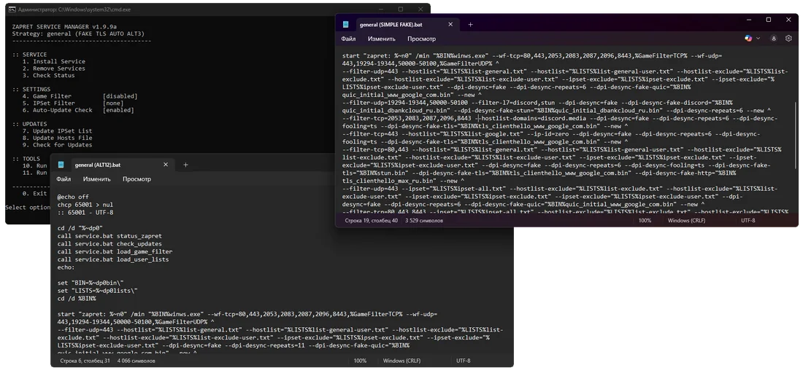
С NetFix
Одна кнопка вместо всего этого
NetFix сам скачает Zapret и tg-ws-proxy, подберёт настройки и запустит. Статус, скорость, пинг и лог видно сразу в одном окне.
Всё скачается само
Настройки подбираются
Статус и лог на виду
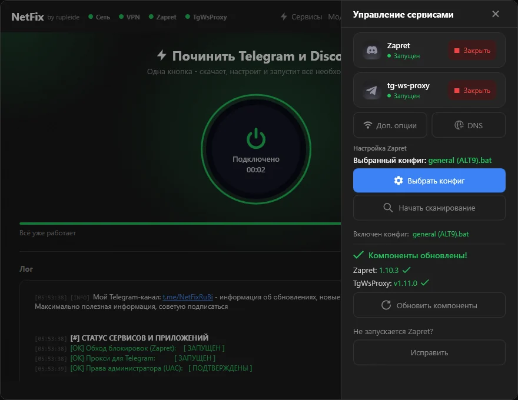
NetFix это не VPN. Он запускает Zapret и tg-ws-proxy прямо на компьютере, и трафик идёт напрямую, мимо фильтра провайдера.
Обычный VPN
Через чужой сервер
Весь трафик сначала летит в другую страну, и только потом в YouTube.
Твой ПКСервер VPN в другой странеYouTube
Чужой сервер видит, куда ты ходишь
Лишний круг через другую страну
NetFix
Напрямую, мимо фильтра
Zapret обходит фильтр провайдера прямо на компьютере. Трафик идёт сразу в YouTube.
Твой ПК + NetFixФильтр провайдераYouTube
Трафик не уходит на чужие серверы
Серверов NetFix просто нет
Без серверов
Локально
Обход работает прямо на компьютере. Трафик не уходит на серверы NetFix, их просто нет.
~20 МБ
Почти незаметен
Включил и забыл: в фоне он почти ничего не потребляет.
Без консоли
Приятно открыть
Аккуратный интерфейс вместо консоли: статус, скорость, пинг и лог видно сразу.
Возможности
Что ещё умеет
01 · Модификации
Не только Telegram и Discord
NetFix открывает и ChatGPT, Gemini и другие сервисы. Во вкладке «Модификации» hosts-моды, листы доменов, bat-стратегии под игры и свои правила.
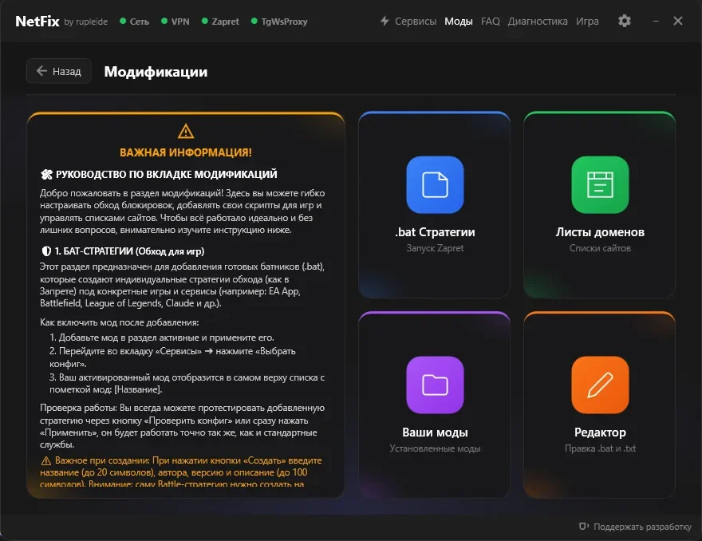
02 · Листы доменов
Нужные сайты одной галочкой
Включаешь лист, и сайты из него идут в обход: Cloudflare Full, X/Twitter и другие. Можно добавить свой.
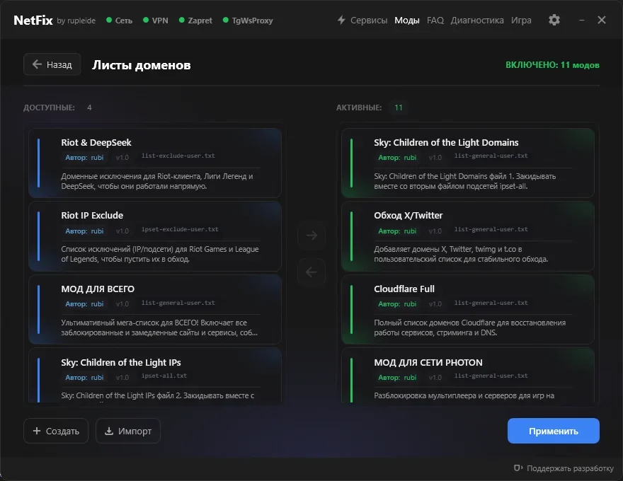
03 · Сервисы
Видно, что работает
Zapret и tg-ws-proxy показаны отдельно: запущены ли они, какой конфиг выбран и какие версии стоят. Если Zapret не запускается, есть кнопка «Исправить».
04 · DNS и Zapret
DNS и тонкая настройка в пару кликов
Xbox-DNS, Cloudflare, Google и другие плюс DNS-over-HTTPS. Game Filter, IPSet и hosts меняются прямо в приложении, без правки bat-файлов.
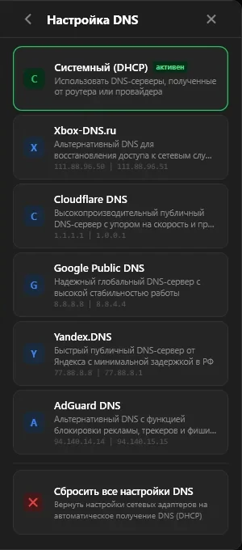
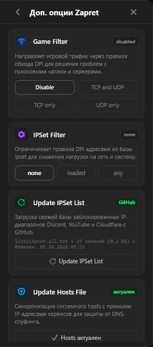
05 · Настройки
Под себя
Автозапуск с Windows, работа из трея, выбор компонентов и обход античитов EAC и BattlEye. У главной кнопки быстрый и полный режим.
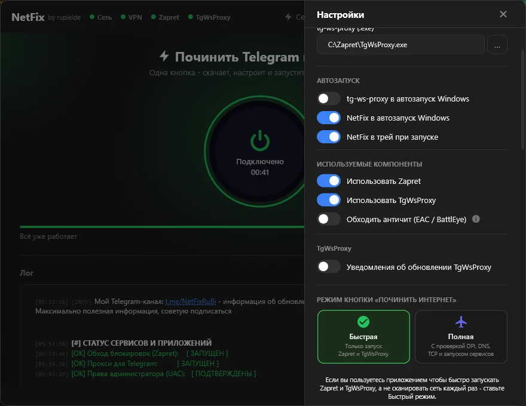
Модификациимоды и стратегии11 модов включеноgeneral (ALT9)запущенDNS-over-HTTPSАвтозапуск с Windows
Весь интернет.Как раньше.
195Мбит/с
ALT9
11 мсПинг
Нажимаешь «Починить»
NetFix проверит сеть и права администратора.
Он скачивает Zapret и tg-ws-proxy
Сам, нужных версий, и сразу запускает.
Подбирает стратегию
Перебирает конфиги Zapret и оставляет рабочий.
YouTube и Discord снова работают
И Telegram тоже: прокси уже поднят.
Отзывы
Что пишут люди
Комментарии с Хабра и из Telegram-канала, как есть.
Хабр
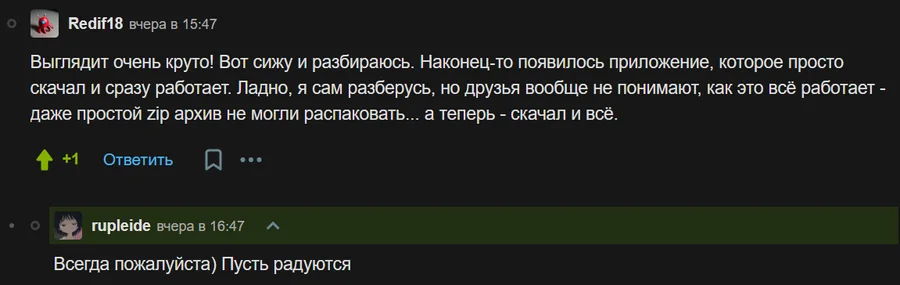
Telegram
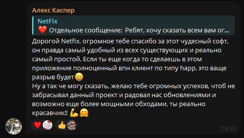
Хабр
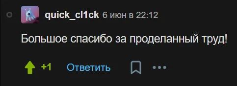
Telegram
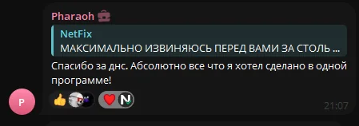
В чём подвох?
Подвоха нет
Бесплатно, без рекламы и регистрации. Open Source: исходники можно прочитать и собрать самому.
Приватность
Не собирает данные
Ни аналитики, ни слежки. NetFix работает у тебя на компьютере и никуда ничего не отправляет.
Безопасность
Не трогает карты и пароли
Ему это просто не нужно. Ни регистрации, ни входа, ни оплаты.
GitHub
Open Source
Весь код лежит на GitHub. Его можно прочитать и собрать самому.
Проверено
Проверка VirusTotal
Каждый релиз проверяется перед тем, как попасть на GitHub.
Я делаю NetFix и сам же отвечаю в поддержке.
Я сам помогаю людям разобраться, хотя мог бы этого и не делать. NetFix я делаю в удовольствие: у меня нет инвесторов, зато есть люди, которым приложение нравится.
Я очень ценю вашу поддержку. Именно она мотивирует меня выпускать обновления и делать NetFix лучше.
Провайдер замедляет YouTube, глушит Discord и ломает Telegram. NetFix Mobile обходит это прямо на телефоне: без чужих серверов, без root и без регистрации. Нажал одну кнопку, и всё работает как раньше.
01 · Без NetFix
YouTube крутится, Telegram молчит
Провайдер режет трафик к нужным сервисам. Видео бесконечно грузится, сообщения висят на «Соединение…».
02 · Одна кнопка
Нажимаешь «Включить»
NetFix сам запускает туннель на телефоне, подбирает способ обхода и поднимает прокси для Telegram.
03 · Пара секунд
И всё снова работает
На главном экране видно задержку и текущий способ. Telegram и YouTube открываются прямо отсюда.
04 · Telegram
Прокси уже настроен
Прокси работает прямо на телефоне. Нажимаешь «Открыть», и Telegram подключён: ни адресов, ни ключей.
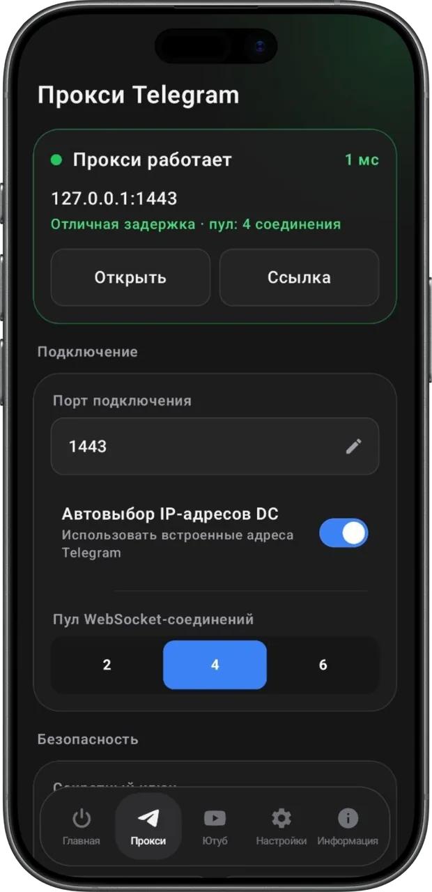
05 · YouTube и Discord
Свой способ для каждой сети
Приложение проверяет способы обхода и запоминает, какой работает на Wi-Fi, а какой на мобильном интернете.
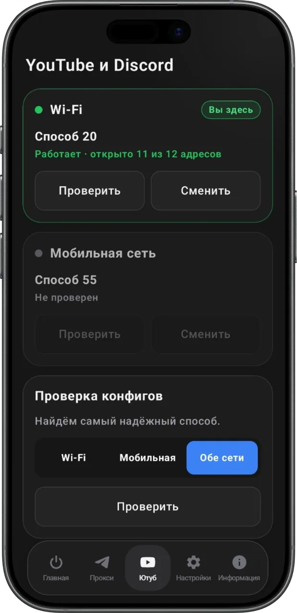
Нет соединения— мсПодбираю способ…Подключено45 мс · отличнаяПрокси работает1 мсСпособ 20 · Wi-Fi11 из 12 адресов
Весь интернет.Как раньше.
11/12адресов
Способ 20
45 мсОтличная
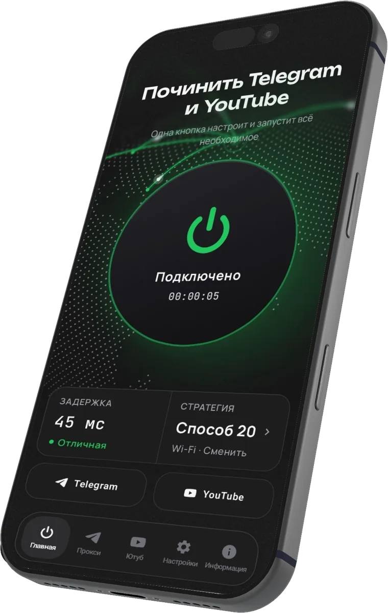
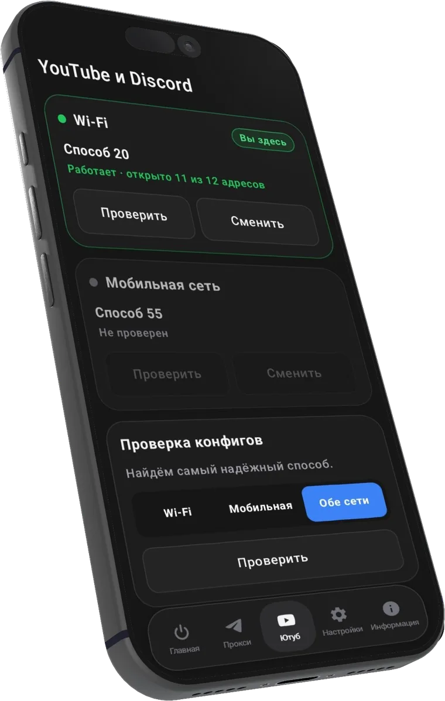
Нажимаешь «Включить»
Туннель запускается прямо на телефоне.
NetFix подбирает способ обхода
Проверяет способы и оставляет тот, что открывает больше всего.
Telegram получает свой прокси
Нажал «Открыть», и он уже подключён.
YouTube и Discord снова работают
Как раньше: видео грузится, голос не рвётся.
Где работает
В кармане и на диване
Для телефона
Одна кнопка, и всё снова грузится
Android 8.0 и новее, без root и регистрации. Работает и на Wi-Fi, и на мобильном интернете: для каждой сети NetFix помнит свой способ обхода.
YouTube и Discord
Прокси для Telegram
Только выбранные приложения
Для Smart TV
YouTube на большом экране
Тот же APK ставится на телевизоры и приставки с Android. При первом запуске выбери «На Smart TV», и NetFix покажет экран под пульт: крупная кнопка и всё видно с дивана.
Управление пультом
Тот же APK
Свой способ для сети дома
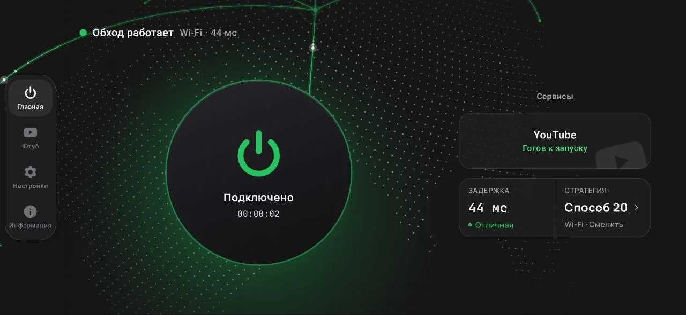
Android назовёт это VPN. Но трафик не покидает телефон: NetFix обходит фильтр провайдера прямо на устройстве, без чужих серверов.
Обычный VPN
Через чужой сервер
Весь трафик сначала летит в другую страну, и только потом в YouTube.
ТелефонСервер VPN в другой странеYouTube
Чужой сервер видит, куда ты ходишь
Лишний круг через другую страну
NetFix Mobile
Напрямую, мимо фильтра
NetFix обходит фильтр провайдера на самом телефоне. Трафик идёт прямо в YouTube.
Телефон + NetFixФильтр провайдераYouTube
Трафик не покидает телефон
Никаких чужих серверов и подписок
Возможности
Всё, что нужно. Ничего лишнего
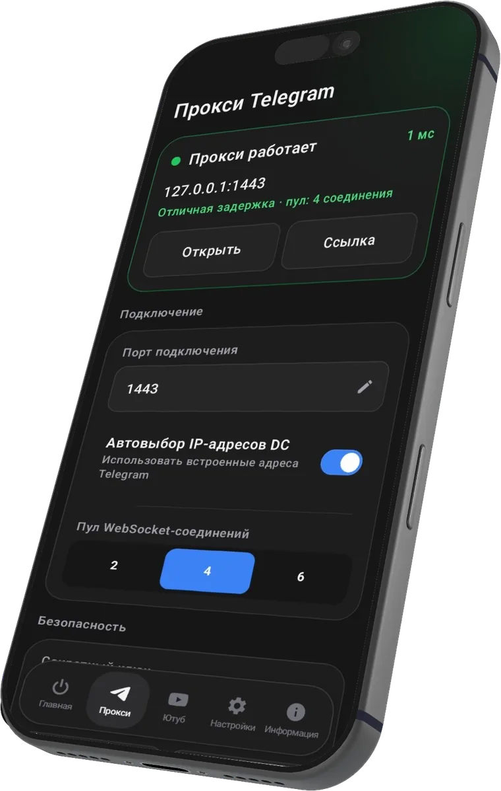
Прокси работает1 мс
127.0.0.1:1443
Отличная задержка · пул: 4 соединения
ОткрытьСсылка
Свой прокси для Telegram
Работает прямо на телефоне. Нажимаешь «Открыть», и Telegram уже подключён: ни адресов, ни ключей.
YouTube
Discord
₽Банк
Игры
Только нужные приложения
Через туннель идёт то, что ты отметил. Банки и игры его не замечают.
Проверка способовWi-Fi
Способ 32/12
Способ 73/12
Способ 125/12
Способ 417/12
Способ 554/12
Способ 2011/12
Выбран способ 20открыто 11 из 12 адресов
Сам находит рабочий способ
Проверяет способы и оставляет тот, что открывает больше всего. Для Wi-Fi и мобильной сети отдельно.
И на телевизоре
Тот же APK ставится на Smart TV с Android: свой экран под пульт, YouTube на большом экране снова грузится.
Зажми, чтобы работать в фоне
Включил и забыл
Зажми кнопку: обход запустится, а приложение закроется и не будет есть память.
Xbox DNSCloudflareGoogleAdGuardYandex
DNS для сайтов и игр
Открывает ChatGPT и мобильные игры вроде Brawl Stars.
Только так приложение может пропускать трафик через себя. NetFix использует это как туннель внутри телефона: трафик не уходит на чужие серверы, а значок ключа в строке состояния просто показывает, что обход включён.
03Нужен root?
Нет. Это обычное приложение: поставил APK и пользуешься. Нужен Android 8.0 или новее.
04Почему APK, а не Google Play?
NetFix Mobile выходит на GitHub, там лежит каждый релиз и весь исходный код. При установке Android попросит разрешить установку из этого источника, это нормально.
05А на телевизоре работает?
Да, на телевизорах и приставках с Android. Поставь тот же APK и при первом запуске выбери «На Smart TV».
06Что делать, если не заработало?
Открой вкладку «Ютуб» и нажми «Проверить»: приложение заново подберёт способ для твоей сети. Если не помогло, напиши в поддержку @sofirka_hanabi.